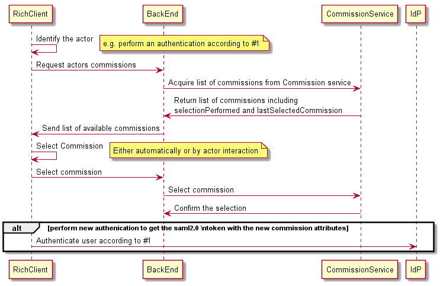

ehr: commission
1.0.0 - draft
ehr: commission - Local Development build (v1.0.0) built by the FHIR (HL7® FHIR® Standard) Build Tools. See the Directory of published versions
Arkitekturen är utformad för att kunna motsvara klienters behov att kunna autentisera användare från rik och tunn klient. En del i autentisering av användare är att kunna göra ett uppdragsval. Att uppdragsvalet görs i en separat tjänst är dels för att möjliggöra uppdragsval när man autentiserar sig från rik klient via WS-Trust 1.3 som inte har stöd för uppdragsval och dels för att tillhandahålla en generell tjänst för denna funktion.
I Figur 1 ser vi hur uppdragsvalstjänsten fungerar. Identifiera användaren Hämta medarbetaruppdrag för användaren från uppdragsvalstjänsten Välj uppdrag Skicka valt uppdrag till uppdragsvalstjänsten

Figur 1 Val av medarbetaruppdrag När uppdraget är valt kan man gå vidare att autentisera använderen och få ett SAML-intyg med medarbetaruppdrag.Nedanstående tabell visar vilka tjänster som finns definierade.
| Tjänst | Beskrivning |
|---|---|
| GetCommissionsForPerson | Hämtar lista med de aktuella medarbetaruppdrag som en användare har samt det senaste valda medarbetaruppdraget. Information finns också om det senaste valda medarbetaruppdraget är aktivt (och därmed bör väljas automatiskt av den konsumerande tjänsten) |
| SetSelectedCommissionForPerson | Sätter vilket medarbetaruppdrag som valdes aktivt av användaren. |
Alla tjänster i tjänstegränssnitten följer RIV-TA-profilens standard för logisk adressering. Med logisk adressering ges möjligheten att kunna ange en logisk adress/mottagare i det fall en tjänsteväxel (tjänsteplattform) används. Detta möjliggör att en för avsändaren transparent tjänsteväxel kan förmedla anrop vidare till en viss instans av uppdragsvalstjänsten och även behörighetskontrollera anropet. Logisk adressat skall anges även om uppdragsvalstjänsten för stunden inte går via en tjänsteväxel. Alla tjänster har ett obligatoriskt meddelandefält där tjänstekonsumenten adresserar med HSA-id för tjänsteproducenten. För de generella tjänsterna som inte har en specifik organisationstillhörighet skall Ineras gemensamma HSA-id SE165565594230-1000 anges. Dessa tjänster representerar en gemensam nivå och hanterar alla gemensamt kända informationsposter. Se tabellen nedan hur adressat skall anges.
| Beteckning | Dokument / Källa |
|---|---|
| RIV TA 2.1 | RIV Teknisk Anvisning Basic Profile 2.1 |
| http://rivta.googlecode.com/svn/wiki/specs/RIV_Tekniska_Anvisningar_Basic_profile_2.1.pdf | |
| WS-Trust 1.3 | Specifikation för WS-Trust 1.3 / http://docs.oasis-open.org/ws-sx/ws-trust/200512/ws-trust-1.3-os.html |